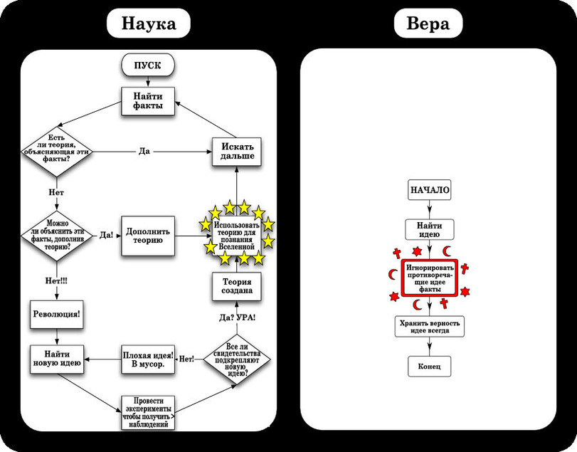
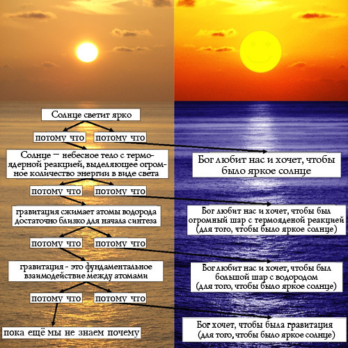

Андрей Борцов (Warrax)
ВАК отныне считает богословие наукой
Президиум Высшей аттестационной комиссии при Минобрнауки России одобрил паспорт новой научной специальности «теология», сообщается на сайте ВАК — 26.00.01. Вот уж новость так новость!
Давайте посмотрим, насколько это научно и зачем это делается.
Что такое наука? Я отрицательно отношусь к Википедии, но даже там написано (выделение моё):
«Наука — область человеческой деятельности, направленная на выработку и систематизацию объективных знаний о действительности. Основой этой деятельности является сбор фактов, их постоянное обновление и систематизация, критический анализ и, на этой основе, синтез новых знаний или обобщений, которые не только описывают наблюдаемые природные или общественные явления, но и позволяют построить причинно-следственные связи с конечной целью прогнозирования. Те теории и гипотезы, которые подтверждаются фактами или опытами, формулируются в виде законов природы или общества».
Где в религии объективные знания о действительности? Где факты, подтверждающие «бог точно есть»? Где вы видели в религии критический анализ догматики? Какое прогнозирование может быть у религии? Как вы себе представляете опыт над феноменом, заявляемым как трансцендентный?
А вот определение из философской энциклопедии:
«Наука — особый вид познавательной деятельности, направленный на выработку объективных, системно организованных и обоснованных знаний о мире. Взаимодействует с др. видами познавательной деятельности: обыденным, художественным, религиозным, мифологическим».
Обратите внимание: взаимодействует с религиозным, мифологическим и т.п. подходом, т.е. научная познавательная деятельность принципиально отлична от религиозной (здесь не придираюсь к тому, что есть знание).
Приведу иллюстративный пример: в 2010-м году патриарх В.М. Гундяев подчеркнул, что
«слово Божье выше интеллектуальных соблазнов, "оно дает полноту бытия, в которой обретается подлинное и непреходящее счастье, и с этим счастьем невозможно сравнить никакое удовлетворение плоти, будь то физическое или интеллектуальное"».
Сразу вспоминается афоризм Джорджа Бернарда Шоу: «То обстоятельство, что верующий счастливее скептика, имеет не большее значение, чем то, что пьяный счастливее трезвого».
Но мы о науке: как думаете, не является ли она случайно «интеллектуальным соблазном»?
Ладно, кратко о самых распространённых заблуждениях на тему веры и науки. Часто заявляют, что-де наличие верующих учёных доказывает совместимость. Махровейшая демагогия: эти учёные не используют религию в науке, а чётко разделяют: тут наука, а тут — религия. Более того, среди учёных верующих значительно меньше, чем в среднем по социуму. Напомню про известный ролик «Нобелевские лауреаты о боге»:
И вообще, по такой «логике» — а какой вывод тогда следует из факта, что большинство преступников на зоне — верующие? «Кольщик, наколи мне купола…».
Утверждения, что-де есть вера везде и у всех, просто у одних — религиозная, а у других — научная, связана с тем, что люди в подавляющем большинстве не различают веру, доверие, уверенность и научное знание. На эту тему у меня есть подробная статья «Вера — что это такое?», в которой также объясняется «почему так». Homo очень хотел бы быть sapiens’ом — «хочу всё знать!» — но, поскольку всё знать невозможно, мало кто может честно сказать «не знаю», психологически комфортнее «опереться на якобы Истину», поэтому вера и подменяет знание с одобрения психики, «я точно знаю, что надо делать!». Примитивные народы вообще живут «по регламенту» (что хорошо для предков, хорошо и для нас), «цивилизованные» более склонны к итсизму («что-то такое где-то там есть») без конкретики религиозных конфессий, но все ищут внешнюю «опору».
В качестве иллюстрации «как религия пытается примазаться к науке» рекомендую подробный разбор статьи С.Л. Головина «Мировоззренческая обусловленность научного исследования», там стандартная демагогия разжёвана по косточкам и разложена по полочкам. Вот, скажем, стандартнейшее:
«Вера в единство этих законов во всем пространственно-временном континууме, проявляемое как в натурных условиях, так и в лаборатории; как при наблюдениях, так и в экспериментах (принцип универсальности)».
В науке НЕТ веры. Наука — скептична. Верующими могут быть учёные, но наука на вере не основана. Учёные, кстати, могут верить не только религиозно — рекомендую на тему смены научных парадигм ознакомиться с известной работой Томаса Куна «Структура научных революций».
В качестве ликбеза «на пальцах» рекомендую заметку Алексея Кравецкого «Почему богословие не наука»:
«…в науке аксиомы хоть и не требуют доказательства, однако доказываются. Проверенное на эксперименте становится теоремой, а под множество теорем подбирают набор аксиом, из которых эти теоремы можно вывести. Не сразу данный манёвр понятен, однако оно так. Физик побросал шарики, записал замеры, прикинул, на какую функцию похоже, подобрал набор аксиом, из которых эту функцию и прочие теоремы вывести можно, проверил аксиомы на новых данных – концепция готова. …в религии такое не проходит. Там аксиомы действительно не доказываются, а принимаются на веру».
Именно так: аксиомы — это не «такое вот захотелось принять на веру», а решение так называемой обратной задачи: какое минимальное количество (и каких именно) постулатов необходимо для корректного построения теории (фальсифицируемой, с математическим аппаратом, прогнозирующей функцией модели и т.д.). В единство законов Вселенной у науки нет веры — эта аксиома автоматом входит во ВСЕ научные теории (иначе невозможна экспериментальная проверка в принципе), но при этом одна из задач современной космологии — эти именно проверка единства естественнонаучных законов. Именно для этого ведётся научная работа — тот же «Хаббл» используется. Можно привести пример аналогичной работы каких-либо теологов на тему проверки существования бога? Возвращаю слово Кравецкому:
«Иными словами, данные, противоречащие теореме, в науке приводят к смене аксиом, а в религии – к корректировке трактовок. Что не одно и то же. Совсем не одно и то же.
А по-другому и быть не может. Если бы догматы религии признать изменяемыми, то выходит, что она совсем даже не богоданна. Или что бог сурово нагнал пророкам. Что в лоб, что по лбу.
Отсюда видно: наука старается открыть новое, а богословие – под открытое новое как-то подогнать старое. Или попытаться это новое оспорить, раз уж подогнать не получается. Такая разность целей однозначно говорит: не наука богословие. Что угодно, но не наука».
Для наглядности — иллюстрация разницы методологий научного и религиозного (теологического) подходов:

При этом с научной точки зрения важна прогностическая функция модели:
«Ценность научной теории в том, что она предсказывает результаты новых экспериментов. Физик вам сможет заранее сказать, как упадёт шарик, археолог – где искать мега-захоронение, а лингвист – как расшифровать ещё нерасшифрованный язык. Что вам может предсказать богослов? Что если не молиться, не поститься и не слушать радио “Радонеж”, то вы попадёте в ад? Очень ценная информация. Жаль, что после её проверки никак нельзя будет рассказать остальным, правда оно было или нет. Что существенно понижает достоверность предсказания. До нуля понижает. А что ещё-то? “Наука богословие” не имеет главного качества науки: осязаемого практического выхода. Все её результаты – это приумножение сторонников конфессии. Небогато».
И ещё одна иллюстрация на тему принципиальной разницы подходов. А то, знаете, нередко пытаются сказать, что-де наука отвечает на вопрос «как?», а религия на вопрос «зачем?»:

И, между прочим, разница между «как» и «зачем» — именно что парадигмальна, т.е. если даже считать религию полезной для каких-либо социальных функций, то всё равно религия — это не наука.
Давайте посмотрим в паспорт новой «научной» дисциплины:
«Специальность “Теология” раскрывает содержание теологии, базовые разделы теологии, изучает источники теологического знания, основы вероучения и религиозных обрядов, исторические формы и практическую деятельность религиозной организации, её религиозное служение, религиозное культурное наследие в различных контекстах. Теологическое исследование направлено на выявление, анализ и интерпретацию значимых аспектов религиозной жизни и их соотнесение с нормами конкретной религиозной традиции. Важной областью предметного поля специальности “Теология” является изучение истории и современного состояния отношения религиозной организации к другим конфессиональным учениям и организациям, а также к государству и обществу».
Ещё до принятия официального паспорта ВАК признал теологию наукой в январе 2015-го года. Председатель ВАК Владимир Филиппов поясняет:
«Принято решение, что объект изучения есть — это теология. Но теология должна рассматриваться и вводиться как специальность с уже существующих десятилетиями подходов, когда присвоение степени кандидатов и докторов наук производится по историческим наукам, по философским наукам, по социологическим наукам, по педагогическим наукам и культурологическим наукам».
Т.е. речь идёт (пока!) не об официальных государственных кандидатах и докторах богословия, а о том, что у философов, социологов, культурологов и т.д. появилась отдельная специализация «теология». Мол, это же всего-навсего приложение вашей научной дисциплины к области религии… Но так это и раньше было! Чем не устраивает религиоведение?! Научных работ на тему религии — масса, от антропологии и до психологии и даже нейрофизиологии.
Во-первых, это делается в рамках общего плана уничтожения системного подхода к науке и образованию в России со стороны либералов: модульный подход, «болонская система» и проч. Не только в России, разумеется, тренд общемировой:
«Финляндия, считающаяся одним из лидирующих государств в области просвещения, начинает один из самых радикальных экспериментов в системе образования. С 2020 года страна обещает отказаться от индивидуальных предметов, таких как математика, химия и физика, а вместо них учить студентов по темам. Это значит, что вместо того, чтобы было два отдельных урока географии и истории, школьники будут учить тему, например, о Евросоюзе, которая охватит языки, экономику, историю и географию».
Математика и естественные науки будут исключены как отдельные предметы (т.е. изучать их системно станет невозможно) и из них будут использоваться лишь отдельные «компетенции», приложимые к неким вопросам. Вот и здесь: можно говорить о научном исследовании феномена религии с точки зрения психологии, социологии, нейрофизиологии, антропологии и т.д., но наличие «научной» теологии приведёт к легимитизации восприятия подхода «теология — это тоже наука, со своими методами». «Откровения как источник теологического знания», например — видите, как сразу меняет значение термин «знание»?
При этом, разумеется, будет множество теологов, которые будут «изучать религию как таковую», при этом воспринимая психологию и т.д. как вторичные дисциплины, «чтобы объяснить теологическое». Рассадник для «учёных», не владеющих научной методологией.
Во-вторых, «становление наукой» теологии легитимизирует религию как нечто, науке не противоречащее, нормальное для современного мира и т.д. Дело в том, что если бы религиозные деятели ограничивались личным убеждением «бог есть, причём именно в том виде, который считает истинной именно наша конфессия», то это было бы из личное мнение — мало ли кто во что верит. Однако религия всегда пытается распространить своё влияние, увеличить количество верующих соответствующей конфессии, а также навязать именно свои правила поведения (включая «всем надо слушать и выполнять, что говорят наши религиозные авторитеты») всем вокруг, включая иноверующих и неверующих вообще.
Старая притча на тему:
«На богоугодном ресурсе дьякона Кураева христиане ломают головы над христианофобией. Поможем им слегка понять, как они выглядят со стороны.
Дабы меня не обвинили в оскорблении чувств верующих, (хотя их, по-моему, оскорбляет вообще всё, что является обьективной реальностью), применим аллегории как в баснях.
Возьмем, допустим, филателистов. Их тоже мало кто понимает, над ними подшучивают, но никакой особой неприязни к ним нет. Теперь представьте, что филателисты заявят, что только данный вид коллекционеров — истинный, а все остальные в лучшем случае заблудшие души, в худшем — гнусные извращенцы, нарочно искажающие светлые идеалы филателизма. И что все достойные люди были филателистами — некоторые, конечно, тайно, но были. А те, кто вообще ничего не коллекционирует — аморальные типы, ибо именно филателизм есть источник морали. Что войну выиграли только благодаря филателизму. Что сволочи-нумизматы им завидуют и постоянно строят козни. Что филателизм есть исконное увлечение русского народа, впитавшее в себя всю его суть, посему "русский — значит, филателист", а коллекционирование, например, ракушек, есть тлетворное влияние Запада, равно как и использование мерзкого термина "хобби", кое есть попытка уравнять благородный филателизм со всеми остальными, что неприемлемо для истинного духа филателизма. Что коллекционеры моделек машин — неоколлекционеры, поскольку в отличие от истинных коллекционеров, даже мерзких нумизматов, их увлечение не имеет вековых традиций, и, следовательно, порочно по определению.
Я думаю, что при таких раскладах "филателиофобия" появится в рекордные сроки».
Религии, основываясь именно на антинаучном догмате «бог точно есть» (соответствующей конфессии), основывают это священными книгами своей религии (содержащими противоречия, легенды и мифы и т.д.), заявляемые Истиной (например: раз в Библии написано, что бог есть, значит, он есть, поскольку Библия написана на основе божественных откровений, и поэтому верна), пытаются стать регулятором общественных отношений: всем надо верить именно в это как в Истину и вести себя так, как велено. Кратко принципы взаимодействия религии с социумом описаны в классическом произведении про Хэнка, которое недавно очень удачно экранизировали:
Особенно забавно наблюдать, как иногда «правильно верующий» даёт ссылку на этот текст или видео: посмотрите, как остроумно кратко описана вся сущность сект! Не-а, там показана сущность любой религии: вера + поклонение.
Обратите внимание: выше я ни слова не сказал о церкви как организации, рассуждения шли именно о религии (вере) как таковой и науке, все рассуждения верны и для случая «вездесущий и всемогущий бог легко может обходиться без священников». Однако в реальной жизни церковные организации есть, и им очень хочется «владеть умами» — при нужде священные книги можно и «истолковывать» (поговорка: Предание важнее Писания) нужным образом. Но положение «правильной религии в государстве» даёт возможность вполне материальной наживы, а также позволяет ничтоже сумняшеся призывать беды на Россию (мол, бог пришлёт страдания на пользу), требовать себе музеи в собственность, разрушать памятники культуры и т.д.
Но не будем о церкви как организации, вполне достаточно того, что заявление теологии научной дисциплиной:
- не обосновано с точки зрения науки и способствует продвижению «понимания» в виде «религия — это тоже такая наука» в социуме;
- затрудняет изучение феномена религии с научной точки зрения — для этого нужно изучать религию именно с точки зрения различных действительно научных дисциплин, а не как теологию.
- служит легитимизации религии в социуме как нормы (именно для социума, не только в частном порядке), что напрямую влияет на расширение влияния соответствующих религиозных организаций.
Для наглядности вернёмся к тому, с чего начали — с Википедии (выделение моё):
«Богословие, или теология — систематическое изложение и истолкование какого-либо религиозного учения, догматов какой-либо религии. Представляет собой комплекс дисциплин, занимающихся изучением, изложением, обоснованием и защитой учения о Боге, его деятельности в мире и его откровении, а также связанных с ним учениях о нравственных нормах и формах Богопочитания. Богословие следует отличать от религиоведения и философии религии».
Из философских словарей:
«спекулятивное учение о Боге, основывающееся на Откровении, т.е. божественном Слове, запечатленном в сакральных текстах теистических религий (в иудаизме — Торой, в христианстве — Библией, в исламе — Кораном). … Исторически Т. формировалась как способ рационального осмысления и защиты («апологии”) понимания “слова Божьего”, присущего данному вероисповеданию, в борьбе с “ложными” религиями (прежде всего язычеством) или внутренними “ересями”, сектами, толками. Иными словами, теолог осознавал и стремился представить собственную веру как высшую универсальную истину, обосновать соответствующие ей культ, нормы и правила жизни…»
«богословие, совокупность религ. доктрин о сущности и действии бога, достроенная в формах идеалистич. умозрения на основе текстов, принимаемых как божеств. откровение. Одна из предпосылок Т. — концепция личного бога, сообщающего непреложное знание о себе через своё «слово», почему Т. в строгом смысле возможна только в рамках теизма или хотя бы в русле теистич. тенденций».
Конечно, можно сказать: это-де религиозная теология, а ВАК ввёл научную, в её рамках можно не верить, но изучать религию. Но ещё раз повторюсь: это делалось многими учёными в рамках соответствующих научных дисциплин, и введение «науки теологии» указывает лишь на желание через «научную теологию» сделать «почти научной» и обычную теологию, т.е. идеалистические спекуляции на основании религиозных книг, заявляемых священными, соответствующих мифов и т.д. Обратите внимание: термины «теология» и «богословие» — полные синонимы, но ВАК не решился написать по-русски «богословие» в перечень паспортов научных дисциплин, маскируя это «научно звучащим» синонимом.
Всё предпринимается с целью, чтобы основная масса народа воспринимала религию как нечто вполне соответствующее научной картине мира, что даст возможность расширять влияние религиозным организациям, а также продвигать, с учётом распространённости в России именно православия, сентенций вида «вся власть – от бога», «бог терпел и нам велел» и т.д. В более широком аспекте — восприятие как нормы веры и поклонения (и, соответственно, покорности), которые очень любят синергетически проявляться, и могут относиться не только к феноменам религии в прямом смысле слова, но и к идеологиям и т.д. Скажем, восприятие и мышление адептов «свободного рынка» имеет структуру, полностью совпадающую с религиозным восприятием мира.
Религиозная вера противоречит логике (закону достаточного основания).
Религиозная вера вполне доказательно объясняется через психологические феномены.
Сейчас народам всего мира навязывают социальную модель либеральной демократии, включающую «свободу от» как фетиш, «свободный рынок» и т.д., и которая не выдерживает критического анализа — во всё это можно лишь верить и поклоняться авторитетам в этой области. Поэтому религии очень хорошо укладываются в эту систему, поддерживая парадигму «нельзя без веры» на бессознательном уровне. Упрощая: верьте в то, что «рука рынка» сделает жизнь лучше, и верьте в то, что за вашу нищету и смиренность перед «эффективными собственниками» попадёте в рай. «Религия — опиум народа», не новость. Несколько цитат по книге Н.С. Гордиенко «Крещение Руси: факты против легенд и мифов» (Лениздат, 1986):
«Неравномерное распределение собственности — есть дело премудрого и всеблагого промышления божия о людях. Если бы все одинаково обеспечены были в средствах жизни и никто ни в ком не нуждался, то явилось бы затруднение в исполнении заповеди о любви к ближнему» (Душеполезное чтение, 1902, ч. II).
«Христианство несовместимо с социализмом» (Церковные ведомости, 1910, № 8)
«Иисус Христос, ни одним словом не отвергал частной собственности, не почитал ее воровством или грабительством и не называл собственников, людей богатых, преступниками только за то, что они были богаты» (Христианская жизнь, 1906, № 9).
«Право собственности каждого, по учению христианства, — составляет святыню для всех неприкосновенную» (Духовная беседа, 1917, № 12).
В 1906 году Синод русской православной церкви издал специальный указ, обязывавший подведомственное ему духовенство «проповедовать в церквах о неприкосновенности частной собственности» (Церковный вестник, 1906, № 28).
Именно поэтому при Сталине такого не было. Постановление ЦК ВКП (б) «О преподавании логики и психологии в средней школе» от 3 декабря 1946 г.:
«ЦК ВКП(б) признал совершенно ненормальным, что в средних школах не преподаются логика и психология».
Учебники — вполне на уровне для тех лет и школьного уровня, см. Теплов Б.М. Психология. Учебник для средней школы (1953 г.) и Виноградов С.Н., Кузьмин А.Ф. Логика. Учебник для средней школы (1954 г.).
Увы, затем коммунистическая идеология стала догматичной и по сути стала квазирелигией: верьте во всё, что сказано в книгах Маркса-Энгельса-Ленина! Ну и партаппарат также выродился из передового отряда развития народа в управленцев, окормляющих паству ритуалами и догматами. Поэтому логику и психологию из школьной программы убрали, и даже в высшем образовании оставили лишь на специальностях, где без них никак не обойтись.
Сейчас же либеральная идеология откровенно противоречит науке (даже Нобелевские премии выдавали за опровержение рыночной системы), и поэтому нужно не просто держать народные массы подальше от логического мышления и знания психологии, но и внедрять веру как норму как можно в более раннем возрасте, задавливая развитие критического мышления в принципе, и всячески делать вид, что религия ничем не противоречит научной картине мира.
=======
P.S. Иллюстративное: http://www.ng.ru/education/2015-10-13/8_students.html
ректор Национального исследовательского ядерного университета «МИФИ» Михаил СТРИХАНОВ:
...традиционные в России конфессии, и прежде всего православие, как государствообразующая религия, несут в себе некий генетический код...
Не секрет, что наука прошла путь от провозглашения примата знания над духовным началом (с эпохи Реформации) и неизбежного обожествления ее (науки) и научно-технического прогресса – к последующему разочарованию в их всемогуществе в конце ХХ века. Каждый важнейший этап величайших научных открытий (в силу того, что оказывались неточными, а то и неверными предыдущие достижения) усиливал это разочарование. В итоге человечество приходит к массовому увлечению оккультизмом, вплоть до откровенного сатанизма. Свидетельство тому и истории с НЛО, и феномен научной фантастики, и жанра фэнтези – современной формы оккультных верований. То есть позиции науки, стоящей на атеистических, примитивно-материалистических позициях, приводят именно к этой, сатанинской форме религиозности!
Настоящее научное познание не может ограничивать себя каким-то одним методом. В данном случае мощнейшим инструментом миропознания являются религия, богословие...